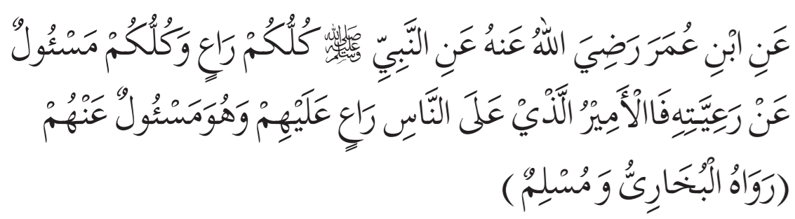
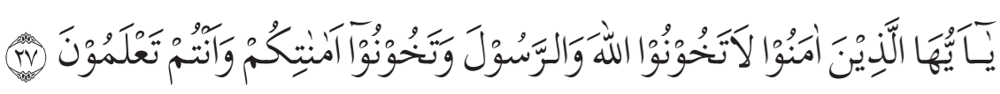
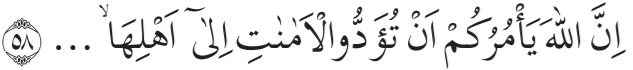
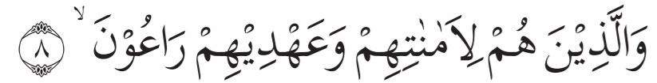

Amanah artinya terpercaya (dapat dipercaya). Amanah juga berarti pesan yang dititipkan
dapat disampaikan
kepada orang yang berhak. Amanah yang wajib ditunaikan oleh setiap orang adalah
hak-hak Allah Swt., seperti
salat, zakat, puasa, berbuat baik kepada sesama, dan yang lainnya. Amanah berkaitan erat
dengan tanggung jawab. Orang
yang menjaga amanah biasanya disebut orang yang bertanggung jawab. Sebaliknya, orang yang
tidak menjaga amanah disebut
orang yang tidak bertanggung jawab. Dengan demikian dapat disimpulkan bahwa menjaga amanah
itu penting. Kalau kalian
setuju dengan pernyataan ini, mulai sekarang kalian harus berlatih untuk menjaga amanah.
Kalian harus berlatih untuk bertanggung jawab. Untuk berlatih tidak sulit. Mulailah dari menjaga amanah yang kecil-kecil, seperti bertanggung jawab saat piket kebersihan. Kalian belajar dan sekolah dengan sungguh-sungguh. Itu juga bagian dari menjaga amanah. Melaksanakan ibadah salat juga bagian dari menjaga amanah dari Allah Swt. Ternyata, tanpa disadari kalian sudah mulai berlatih menjaga amanah. Siapa tahu kelak di antara kalian ada yang mendapat amanah untuk menjadi seorang pemimpin. Jika kalian berlatih mulai dari sekarang, pada saat menjadi pemimpin tentu tidak sulit untuk menjaga amanah.
Kalian harus berlatih untuk bertanggung jawab. Untuk berlatih tidak sulit. Mulailah dari menjaga amanah yang kecil-kecil, seperti bertanggung jawab saat piket kebersihan. Kalian belajar dan sekolah dengan sungguh-sungguh. Itu juga bagian dari menjaga amanah. Melaksanakan ibadah salat juga bagian dari menjaga amanah dari Allah Swt. Ternyata, tanpa disadari kalian sudah mulai berlatih menjaga amanah. Siapa tahu kelak di antara kalian ada yang mendapat amanah untuk menjadi seorang pemimpin. Jika kalian berlatih mulai dari sekarang, pada saat menjadi pemimpin tentu tidak sulit untuk menjaga amanah.
Rasulullah saw. bersabda:

“Dari Ibnu Umar r.a., Rasulullah saw. bersabda:“Setiap kalian adalah pemimpin dan akan diminta pertanggungjawaban atas kepemimpinannya. Seorang kepala negara adalah pemimpin dan akan diminta pertanggungjawaban perihal rakyat yang dipimpinnya...” (H.R. Bukhari dan Muslim)
Nah, sekarang saatnya kalian mengetahui macam-macam bentuk amanah.
Amanah itu dapat dibedakan menjadi tiga macam, yaitu:
Contoh amanah kepada Allah Swt. yaitu menjalankan semua yang diperintahkan dan meninggalkan
semua yang dilarangnya.
Bukankah kita diciptakan oleh Allah Swt. untuk mengabdi kepada-Nya? Orang yang mengabdi kepada-Nya
berarti telah memenuhi amanahNya.
Orang yang tidak mengabdi kepada-Nya berarti telah mengingkari amanah-Nya.
Amanah terhadap Allah Swt.
Amanah ini berupa ketaatan akan segala perintah dan menjauhi segala larangan-Nya. Allah swt. berfirman:Q.S. al-Anfal/8: 27

”Wahai orang-orang yang beriman, janganlah kalian mengkhianati Allah dan Rasul (Muhammad), dan (juga) janganlah kalian mengkhianati amanat-amanat yang dipercayakan kepadamu, sedang kamu mengetahui.”
Amanah terhadap sesama manusia
Amanah ini meliputi hak-hak antar sesama manusia. Misalnya, ketika dititipi pesan atau barang, maka kita harus menyampaikannya kepada yang berhak. Allah Swt. berfirman:Q.S. an-Nisa’/4: 58

“Sesungguhnya Allah Swt. menyuruh kamu untuk menyampaikan amanah kepada yang berhak menerimanya... ”
Amanah terhadap diri sendiri
Amanah ini dijalani dengan memelihara dan menggunakan segenap kemampuannya demi menjaga kelangsungan hidup, kesejahteraan, dan kebahagiaan diri. Allah Swt. berfirman:Q.S. al-Mu’minun/23: 8

“Dan (sungguh beruntung) orang yang memelihara amanat-amanat dan janjinya ”
Hikmah atau manfaat dari perilaku amanah adalah:
-
1.
Dipercaya orang lain, ini merupakan modal yang sangat berharga dalam menjalin hubungan atau berinteraksi antara sesama manusia. -
2.
Mendapatkan simpati dari semua pihak, baik kawan maupun lawan -
3.
Hidupnya akan sukses dan dimudahkan oleh Allah Swt.
Perilaku Amanah dalam Kehidupan Sehari-hari
-
1.
Menjaga titipan dan mengembalikannya seperti keadaan semula. Apabila kita dititipi sesuatu oleh orang lain, misalnya barang berharga, emas, rumah, atau barang-barang lainnya, maka kita harus menjaganya dengan baik. Pada saat barang titipan tersebut diambil oleh pemiliknya, kita harus mengembalikannya seperti semula. -
2.
Menjaga rahasia. Apabila kita dipercaya untuk menjaga rahasia, baik itu rahasia pribadi, rahasia keluarga, rahasia organisasi, atau rahasia negara, maka kita wajib menjaganya supaya tidak bocor kepada orang lain. -
3.
Tidak menyalahgunakan jabatan. Jabatan adalah amanah yang wajib dijaga. Apabila kita diberi jabatan apapun bentuknya, maka kita harus menjaga amanah tersebut. Segala bentuk penyalahgunaan jabatan untuk kepentingan pribadi, keluarga, atau kelompok termasuk perbuatan yang melanggar amanah.